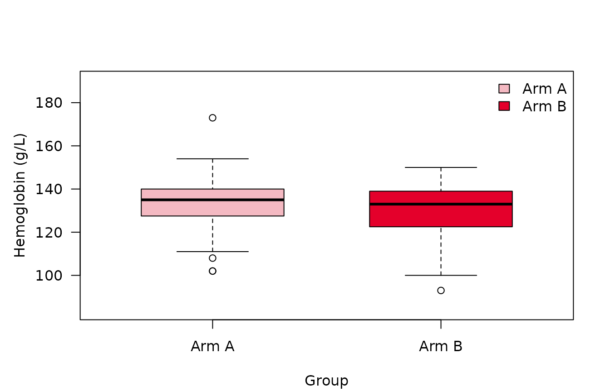
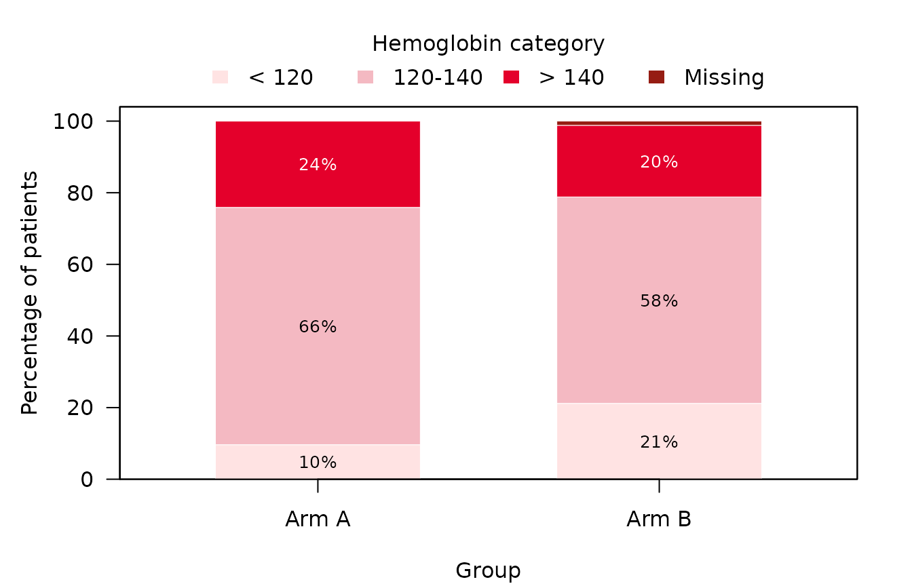
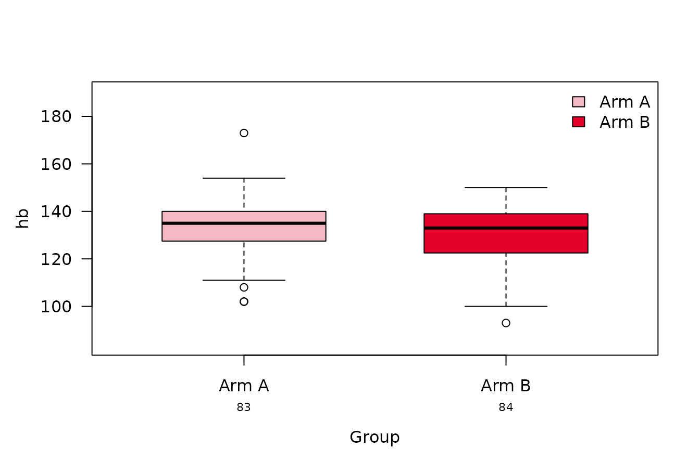
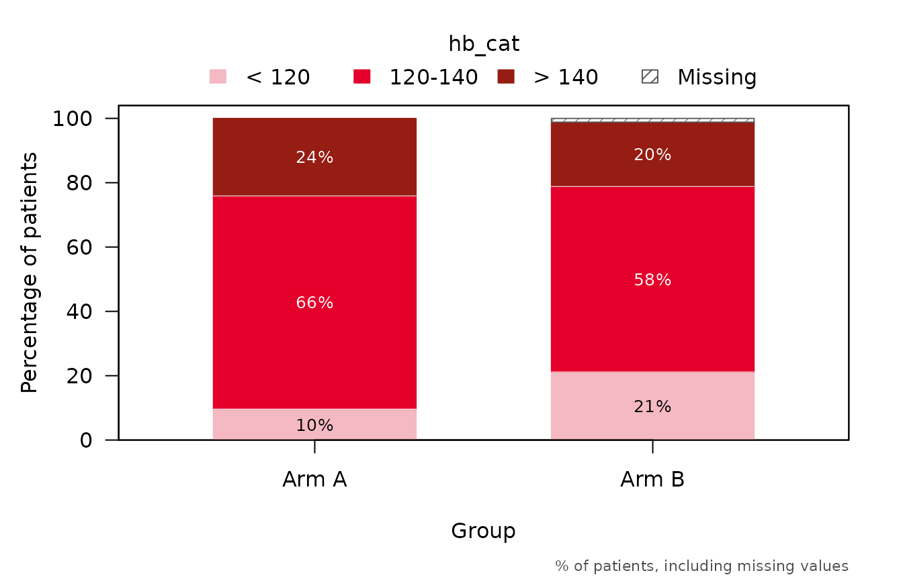

summarizeSCI() produces, in one call, the summary table
of summaryTable() and one plot per variable: a boxplot for
continuous variables and a stacked barplot for categorical and
dichotomous ones. The type of each plot follows the type the variable
has in the table, so table and plots always agree. The plots use the
same rows as the table, and the box of the boxplot spans the quartiles
as the table computes them, so it shows the numbers of a
"median_IQR" table.
Setup and data
We use the hemoglobin values of the second visit of
summarySCI::hemoglobin_data, and add a categorical version
of them.
Table and plots
By default (type = "both"), the result holds the table
and the plots, which are addressed by variable name.
res <- summarizeSCI(hb2, vars = c("hb", "hb_cat"), group = "Arm",
labels = list(hb = "Hemoglobin (g/L)",
hb_cat = "Hemoglobin category"))
names(res$plots)
#> [1] "hb" "hb_cat"
res$tableCharacteristic |
N1 |
Arm A |
N1 |
Arm B |
|---|---|---|---|---|
Hemoglobin (g/L) |
83 |
135.0 (102.0, 173.0) |
84 |
133.0 (93.0, 150.0) |
Missing |
0 |
1 |
||
Hemoglobin category |
83 |
84 |
||
< 120 |
8 (10%) |
18 (21%) |
||
120-140 |
55 (66%) |
49 (58%) |
||
> 140 |
20 (24%) |
17 (20%) |
||
Missing |
0 (0%) |
1 (1%) |
||
1N without missing values | ||||
2Median (Min, Max); n (%) | ||||
res$plots$hb
res$plots$hb_cat
Use type = "table" or type = "plot" to get
only one of them.
plots <- summarizeSCI(hb2, vars = c("hb", "hb_cat"), group = "Arm",
type = "plot")$plotsSettings carry over to the plots
The settings of the table are applied to the plots as well:
- the variable labels become the axis and legend titles;
- missing values form a segment of their own exactly when the table’s
percentages count them (
missing,missing_percent); -
stat_cat = "n"shows counts instead of percentages.
res_n <- summarizeSCI(hb2, vars = "hb_cat", group = "Arm",
stat_cat = "n", missing_percent = FALSE)
res_n$plots$hb_catPlot options
Options that only concern the plots go into plot_args.
Each plot takes the arguments its plotting function has (see
?boxplotSCI and ?stackedbarplotSCI); an
argument that no plot uses gives a warning.
res_opt <- summarizeSCI(hb2, vars = c("hb", "hb_cat"), group = "Arm",
type = "plot",
plot_args = list(risk_table = TRUE,
group_names_short = c("A", "B")))
res_opt$plots$hb
stat_footnote = TRUE adds a footnote in the bottom-right
corner saying what a plot shows, e.g. the box and whiskers of a boxplot
or the denominator of the percentages of a stacked bar; a character
string gives a text of your own.
res_note <- summarizeSCI(hb2, vars = "hb_cat", group = "Arm", type = "plot",
plot_args = list(stat_footnote = TRUE))
res_note$plots$hb_cat
Saving the table and plots
With word_output = TRUE, the table is also saved to a
Word document at file_path, exactly as
summaryTable() saves it:
summarizeSCI(hb2, vars = c("hb", "hb_cat"), group = "Arm",
word_output = TRUE, file_path = "hemoglobin_table.docx")save_plots() writes every plot of a result into its own
file. The format ("png", "jpeg",
"tiff", "pdf" or "svg"), size in
inches and resolution are set with format,
width, height and res. Since each
plot is redrawn at the requested size, its layout always fits the
file.
out <- file.path(tempdir(), "figures")
# one file per variable, named after it
basename(save_plots(res, file_path = out))
#> [1] "hb.png" "hb_cat.png"
# a single name prefixes the variable names
basename(save_plots(res, file_name = "fig", file_path = out, format = "pdf"))
#> [1] "fig_hb.pdf" "fig_hb_cat.pdf"
# one name per plot, or a single plot
basename(save_plots(res, file_name = c("hb_box", "hb_bars"), file_path = out))
#> [1] "hb_box.png" "hb_bars.png"
basename(save_plots(res$plots$hb, file_name = "hemoglobin", file_path = out,
width = 6, height = 4))
#> [1] "hemoglobin.png"